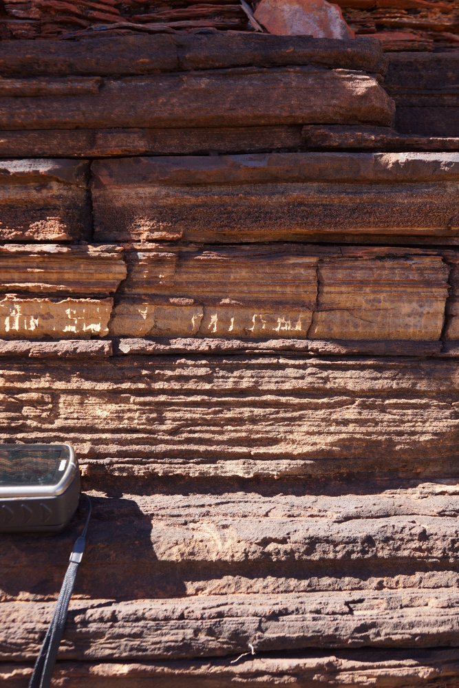
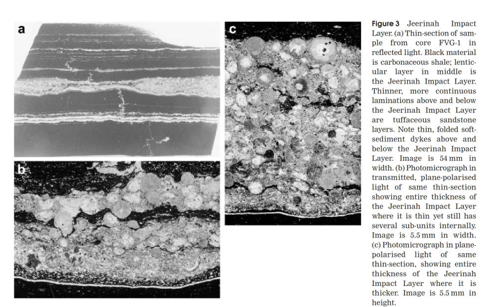
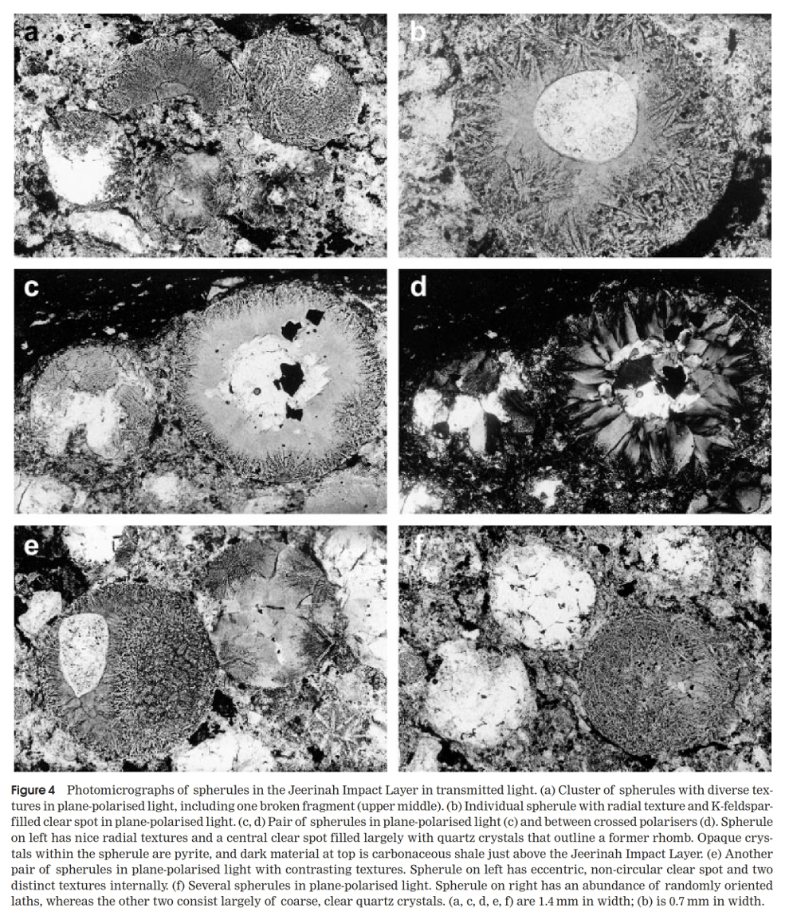

Under Construction
Outcrop of the Spherule Marker Bed (SMB) in the Wittenoom Formation, south of the Munjina Roadhouse, Pilbara Region, WA. Photography by G Boxer (April 2014). Location GDA94 zone 50, 673720mE, 7520930mN.
Archaean age (>1800 Ma) impact eject and fallout units have been discovered in South Africa (Barberton greenstone belt, "BGB") and in the Pilbara region of central Western Australia. These units document very large asteroid impacts that occurred during the period 3.5 Ga (Ga = billion years) through to 1.85 Ga (Glikson 2013) and some of these fallout units can be correlated between the Pilbara and South Africa. The asteroids producing these impact and eject layers were tens of kilometres in diameter and would have had worldwide effects. Tsunami deposits have also been identified above some of these ejecta and fallout units.
The spherules are produced by the condensation of impact-ejected vapour released when large asteroids collide with earth (Glikson 2013). At the site of the impact, the rocks are shattered and brecciated, with those closest to the asteroid being evaporated, and the elastic rebound of the crust at the impact site produces an upraised dome. The condensing vapour is dispersed in the atmosphere as a myriad of melt droplets which solidify as tiny glass spheres which are preserved in submarine sediments. These microkrystite spherules contain inward-radiating quench crystallites and may also contain nickel-rich spinel, rare micrometre scale nuggets of nickel and platinum group elements, and geochemical and isotopic signatures including platinum group element anomalies with high iridium levels (Glikson 2013).
Archaean age spherule units occur in the BGB in South Africa and the Pilbara region of WA. The Geological Survey of Western Australia (GSWA) has produced a map of the spherule layers of the Pilbara and can be found here.
The oldest spherule unit in the Pilbara occurs within the Antarctic Chert Member of Duffer Formation in the North Pole Dome, which falls within the Warrawoona Group of the Pilbara Supergroup. An age of 3407 +/- 1.9 Ma was obtained from 207Pb/206Pb dating of zircons from the spherule unit (Glikson 2013). The Antarctic Chert Member occurs on the North Shaw 1:100 000 map sheet and the Marble Bar (SF50-8) 1:250 000 map sheet.
The Jeerinah Impact Layer (JIL) and Carawine mega-breccia record a significant impact event at between 2629 and 2690 Ma. The JIL comprises a basal microkrystite-bearing rip-up siltstone fragment breccia, a lenticular spherule unit up to 60 cm thick, and an overlying boulder-size debris flow conglomerate (Glikson 2013). The JIL was first recognised by Simonson et al (2000) in a deep drill hole drilled by CRA Exploration Pty Limited in 1983-84.
Figure 3 from Simonson et al 2000 showing the spherule layers in the drill core.
Figure 4 from Simonson et al 2000 showing the detail of the spherule layers in the drill core.
To be continued
Glikson A Y. 2013. The Asteroid Impact Connection of Planetary Evolution - with special reference to large Precambrian and Australian Impacts. Springer.
Simonson B M, Davies D and Hassler S W. 2000. Discovery of a Layer of Probable Impact Melt Spherules in the Late Archaean Jeerinah Formation, Fortescue Group, Western Australia. Australian Journal of Earth Science, vol. 47, p. 315-325.
Other Impact Sites of Western Australia
Glikson
Gnargoo
Goat Paddock
Ilkurka
Lennis
Mercury
Piccaninny
Skirmish
Spider
Veveers
Woodliegh